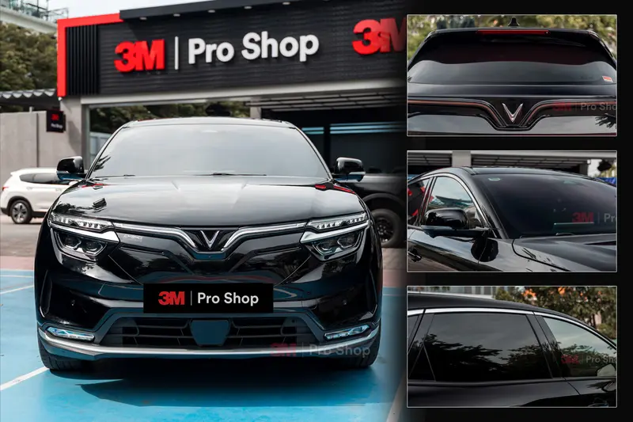
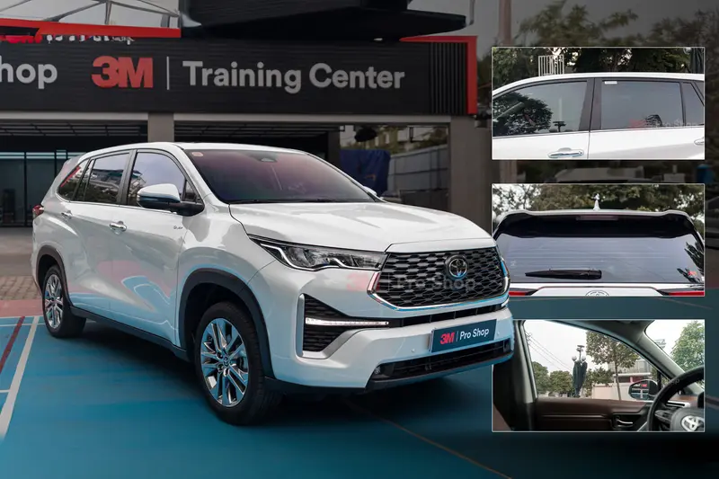

Truyền qua
Phần năng lượng và ánh sáng đi qua hệ kính–phim vào cabin. VLT chỉ mô tả vùng ánh sáng nhìn thấy, không đại diện cho toàn bộ năng lượng mặt trời.
Một điểm bắt đầu có phương pháp: xác định xe và từng vị trí kính, hiểu công nghệ và thông số, rồi đối chiếu thương hiệu bằng nguồn hãng, điều kiện đo, bảo hành và bằng chứng thực tế.
Nguyên tắc: kính lái ưu tiên tầm nhìn; khoang sau cân bằng riêng tư; panorama được khảo sát riêng; số liệu hãng và số đo trên xe không được trộn lẫn.
Ảnh chụp tại 3M Pro Shop & 3M Training Center thuộc Auto365 — quan hệ thương mại được công bố.
Phim cách nhiệt ô tô là lớp vật liệu dán lên kính xe nhằm hỗ trợ kiểm soát năng lượng mặt trời truyền vào cabin, giảm tia UV truyền qua, hạn chế chói và tăng riêng tư. Cấu hình phù hợp cần được chọn riêng cho kính lái, kính sườn, kính lưng và cửa sổ trời; không nên chọn chỉ theo độ tối hoặc một chỉ số đơn lẻ.
Khi bức xạ gặp kính và phim, một phần có thể truyền qua, một phần phản xạ và một phần bị hấp thụ rồi phát lại về hai phía. Vì vậy, cảm giác nóng trong cabin không thể được giải thích chỉ bằng độ tối hoặc một số IRR.
Phần năng lượng và ánh sáng đi qua hệ kính–phim vào cabin. VLT chỉ mô tả vùng ánh sáng nhìn thấy, không đại diện cho toàn bộ năng lượng mặt trời.
Một phần năng lượng quay lại phía ngoài. Mức phản xạ và màu phản chiếu cần được xem cùng thẩm mỹ, góc nhìn và điều kiện sử dụng.
Kính và phim có thể hấp thụ năng lượng, nóng lên rồi phát lại. Đây là lý do phải phân biệt một phép đo tức thời với hiệu năng của toàn hệ.
TSER mô tả tổng năng lượng bị loại bỏ trong điều kiện thử. Muốn so sánh phải biết kính tham chiếu, phương pháp, mã phim và revision nguồn.
Kết quả của riêng tấm phim không được trình bày như kết quả sau khi dán lên mọi xe. Kính nguyên bản, độ dày, màu, góc kính, diện tích cabin, điều hòa và môi trường đều có thể làm trải nghiệm thực tế thay đổi.
Nhận kết quả trước, không cần để lại số điện thoại.
Kết quả được tạo từ nhóm xe, thói quen sử dụng và mức ưu tiên đã chọn.
Dành cho: SUV / CUV / MPV
FilmMatch không tự chọn hãng. Brand Atlas cho biết hồ sơ nào đủ nguồn để đối chiếu và trường nào còn thiếu; điều này không đồng nghĩa thương hiệu đó tốt nhất cho mọi xe.
Ba mức phổ biến theo cấu hình Auto365 phối từ phim 3M, tính cho nhóm Minicar. Giá đúng theo xe cần xác nhận thêm nhóm xe, phim cũ và cửa sổ trời.
| Cấu hình | Phù hợp | Giá tham khảo |
|---|---|---|
| Ceramic Hybrid | Đi phố, ưu tiên ngân sách | Từ 5.900.000đ |
| Ceramic IR | Xe gia đình, dùng hằng ngày | Từ 7.200.000đ |
| Crystalline CR BLK | Ưu tiên kính lái, trải nghiệm | Từ 12.200.000đ |
Diện tích kính, góc kính, kính nguyên bản, panorama, HUD/ADAS và thói quen sử dụng làm thay đổi tiêu chí lựa chọn. Bảng dưới đây là điểm bắt đầu; mã phim cuối chỉ được chốt sau khi kiểm tra xe.
Ưu tiên tầm nhìn kính lái, cảm giác nóng sát kính và chi phí theo đúng phạm vi kính.
Tách kính lái, sườn trước và khoang sau; kiểm tra sấy kính lưng và camera.
Chú ý nắng ngang, riêng tư, tầm nhìn gương và tổng diện tích thi công.
Khảo sát panorama, HUD, camera, anten, GPS và ETC/VETC trên chính chiếc xe.
Ưu tiên dễ quan sát, cấu hình dễ kiểm tra và quy trình bảo hành rõ ràng.
Thử mẫu trong điều kiện ánh sáng gần thực tế; không chọn kính lái chỉ theo độ tối.
| Tình huống | Ưu tiên đầu tiên | Phải kiểm tra | Điểm đánh đổi |
|---|---|---|---|
| Thường đi đêm | Độ trong và khả năng quan sát | Kính lái, gương, camera trong mưa/hầm | Riêng tư hoặc giảm chói quá cao có thể làm kính tối hơn |
| Xe gia đình | Cân bằng tầm nhìn, UV và riêng tư | Hàng ghế sau, trẻ nhỏ, kính lưng | Không dùng độ tối thay cho hiệu năng tổng thể |
| Panorama lớn | Tải nhiệt từ phía trên | Kết cấu kính, rèm, cảm biến, diện tích | Giá và thời gian phải tách khỏi gói cơ bản |
| Xe có HUD/ADAS | Tương thích quang học và thiết bị | HUD, camera, cảm biến mưa, anten | Cần nghiệm thu trên xe, không suy từ tên công nghệ |
Kính lái ảnh hưởng trực tiếp đến khả năng quan sát; kính sườn trước liên quan đến góc nhìn gương; khoang sau có thể ưu tiên riêng tư nhiều hơn; panorama cần khảo sát riêng.
Ưu tiên độ trong quang học và khả năng nhìn ngày, đêm, mưa, hầm. Đọc VLT cùng TSER và điều kiện thử; không chọn chỉ bằng cảm giác tối hoặc thử đèn nhiệt.
Cân bằng nắng ngang, riêng tư và góc nhìn gương. Xe thường đi đêm hoặc đường tỉnh không nên chọn quá tối nếu chưa thử thực tế.
Có thể ưu tiên riêng tư và giảm chói hơn khoang trước, nhưng vẫn cần xem khả năng quan sát từ trong ra ngoài và nhu cầu của hành khách.
Chú ý dây sấy, anten, camera sau, độ cong và tầm nhìn qua gương. Khi bóc phim cũ phải đánh giá keo và nguy cơ tác động tới dây sấy.
Diện tích, kết cấu kính, rèm che và tải nhiệt khác kính sườn. Không mặc định cùng mã, cùng giá hoặc cùng quy trình nếu chưa khảo sát.
Cách gọi có thể khác giữa các nhà sản xuất. Khi so sánh cần quay về cấu trúc được hãng công bố, dữ liệu trên cùng điều kiện, độ trong quang học, màu, độ bền, tương thích thiết bị và tổng chi phí sở hữu.
Màu và độ tối đến từ lớp hấp thụ màu. Thường dễ tiếp cận về chi phí; cần kiểm tra độ bền màu, độ trong và dữ liệu hiệu năng thay vì suy từ độ tối.
“Carbon” là tên nhóm thương mại rộng. Thành phần và hiệu năng có thể khác nhau; không thể xếp hạng nếu thiếu cấu trúc, mã phim và dữ liệu thử tương đương.
Lớp kim loại có thể hỗ trợ kiểm soát năng lượng và tạo độ phản xạ. Cần kiểm tra màu, VLR, quy định sử dụng và tương thích tín hiệu trên từng xe.
Phún xạ mô tả một phương pháp tạo lớp phủ mỏng. Chất lượng cuối phụ thuộc vật liệu, số lớp, quy trình và thiết kế sản phẩm; không đồng nghĩa tự động “cao cấp nhất”.
Thường được quảng bá là không kim loại. Cần đối chiếu TDS, TSER, VLT, màu, haze và độ bền; nhãn “nano” tự nó không chứng minh hiệu năng.
Cấu trúc nhiều lớp có thể tối ưu chọn lọc phổ và độ trong. Vẫn phải đọc mã cụ thể, kính tham chiếu, màu, góc nhìn và điều kiện bảo hành.
Chỉ so sánh khi cùng mã, cùng loại kính tham chiếu, cùng dải bước sóng, cùng phương pháp và cùng nguồn revision. Nếu thiếu một điều kiện, kết luận phải được ghi là chưa đủ dữ liệu.
Không nên xếp hạng phim bằng một chỉ số nếu kính tham chiếu, phương pháp hoặc nguồn dữ liệu khác nhau.
Cho biết lượng ánh sáng nhìn thấy truyền qua hệ kính–phim. Với kính lái, VLT liên quan trực tiếp đến trải nghiệm quan sát.
Phản ánh hiệu năng tổng thể trong điều kiện thử; phải đọc cùng loại kính tham chiếu và phương pháp.
IRR phụ thuộc dải bước sóng; UVR mô tả tỷ lệ tia UV bị loại bỏ trong điều kiện công bố. Không dùng một số đơn lẻ thay cho toàn bộ hiệu năng.
IRER tính đến phần hồng ngoại truyền qua và phần hấp thụ có thể phát lại vào trong. Chỉ so sánh khi định nghĩa và điều kiện thử tương đương.
VLR liên quan ánh sáng nhìn thấy bị phản xạ; giảm chói thường đi cùng thay đổi độ sáng. Cần kiểm tra màu, phản chiếu và khả năng quan sát thực tế.
Số liệu đo trên riêng phim không được trình bày như kết quả của hệ kính–phim. Kính nguyên bản, độ dày, màu và góc kính có thể làm kết quả khác đi.
| Lớp dữ liệu | Dùng để trả lời | Bắt buộc ghi | Không được dùng để |
|---|---|---|---|
| Tài liệu nhà sản xuất | Thông số và điều kiện thử của từng mã phim | Tên tài liệu, revision, kính, phương pháp, URL | Khẳng định kết quả giống hệt trên mọi xe |
| Giá và bảo hành | Khách phải trả bao nhiêu và được bảo vệ thế nào | Ngày hiệu lực, hạng mục gồm/loại trừ, điều kiện | Đại diện cho toàn bộ thị trường |
| Đo nghiệm thu trên xe | Xe cụ thể sau thi công đạt trạng thái gì | Kính nền, thiết bị, ngày, điều kiện và Case ID | Thay thế TDS của nhà sản xuất |
Hub chỉ dẫn nguồn kèm đúng phạm vi điều chỉnh. Hub không tự suy ra ngưỡng truyền sáng cho phim dán sau khi xe xuất xưởng và không kết luận thay cơ quan quản lý.
Thông tư 48/2024/TT-BGTVT do Bộ Giao thông vận tải ban hành ngày 15/11/2024, hiệu lực 01/01/2025, ban hành một bộ quy chuẩn kỹ thuật quốc gia. Quy chuẩn liên quan trực tiếp đến kính ô tô là QCVN 32:2024/BGTVT về kính an toàn của xe ô tô, thay thế QCVN 32:2017/BGTVT.
QCVN 32:2024/BGTVT quy định yêu cầu kỹ thuật trong kiểm tra, thử nghiệm và chứng nhận kính an toàn dùng làm kính chắn gió và các loại kính cửa. Đối tượng áp dụng là cơ sở sản xuất lắp ráp trong nước, tổ chức và cá nhân nhập khẩu kính an toàn, cùng các bên liên quan đến quản lý, thử nghiệm và chứng nhận.
Mục 9.1.4.1 Phụ lục A quy định hệ số truyền sáng ổn định của kính an toàn không được nhỏ hơn 70%, đo theo phương pháp phòng thử nghiệm nêu tại mục 9.1. Mục 9.1.4.2 cho phép kính đặt ở vị trí không cần thiết cho việc quan sát của lái xe, ví dụ trên nóc xe, có giá trị nhỏ hơn 70% và phải được đánh dấu. Con số này là tiêu chí nghiệm thu cho tấm kính khi sản xuất và nhập khẩu. Hub không dùng con số này làm ngưỡng cho phim dán hậu mãi và không cộng trừ nó với bất kỳ dung sai đo hiện trường nào.
| Nguồn | Điều chỉnh nội dung gì | Áp dụng cho ai | Không được dùng để |
|---|---|---|---|
| Thông tư 48/2024/TT-BGTVT | Ban hành một bộ quy chuẩn kỹ thuật quốc gia; bản thân Thông tư không có nội dung về kính hay phim | Theo từng quy chuẩn được ban hành kèm | Trích như văn bản quy định độ truyền sáng của phim dán |
| QCVN 32:2024/BGTVT | Yêu cầu kỹ thuật khi kiểm tra, thử nghiệm và chứng nhận kính an toàn | Cơ sở sản xuất lắp ráp trong nước, tổ chức và cá nhân nhập khẩu kính an toàn và các bên liên quan đến chứng nhận | Suy ra ngưỡng cho hệ kính cộng phim sau khi xe xuất xưởng |
| ISO 13837:2021 | Phương pháp xác định độ truyền sáng, độ truyền năng lượng mặt trời trực tiếp và tổng, cùng đặc trưng màu của vật liệu kính an toàn | Bên thực hiện và bên công bố dữ liệu theo phương pháp này | Tuyên bố một sản phẩm “đạt ISO 13837” như một chứng nhận |
Cách kiểm tra: tra toàn văn bản QCVN 32:2024/BGTVT nêu tại sổ nguồn, phiên bản truy cập ngày 11/08/2026, bằng từ khóa “phim”, “dán” và “ISO 13837”. Kết quả: từ “phim” chỉ xuất hiện khi mô tả một phim dương bản dùng làm thiết bị trong phép thử độ méo quang học; không tìm thấy tham chiếu tới ISO 13837. Hai nguồn được hub dẫn độc lập với hai mục đích khác nhau. Vì vậy không thể suy từ ngưỡng nghiệm thu tấm kính ra một ngưỡng cho hệ kính cộng phim. Nếu bản văn được sửa đổi, claim này phải được kiểm tra lại và ghi vào lịch sử phiên bản.
Trang chuyên sâu · Cornerstone P0 chưa xuất bản: phân tích đầy đủ nguồn nhà nước, phạm vi điều chỉnh và nguyên tắc không tự đặt ngưỡng sẽ nằm tại /quy-dinh-dan-phim-cach-nhiet-o-to. Theo release gate, hub chỉ gắn liên kết khi URL trả 200, self-canonical, indexable, có nội dung độc lập và liên kết ngược về hub.
Tám hồ sơ dùng chung một bộ trường dữ liệu để anh/chị tự đối chiếu: công nghệ hãng công bố, nguồn bảo hành, trạng thái case và quan hệ thương mại với Auto365. Đây là bản đồ tham chiếu, không phải bảng xếp hạng.
3M công bố danh mục ô tô gồm Crystalline CR BLK sử dụng phim quang học đa lớp kết hợp nano gốm, Ceramic IR/IM, Color Stable nano-carbon và FX-HP tráng phủ kim loại. Dữ liệu chỉ được đối chiếu theo đúng mã, vị trí kính và điều kiện đo.
V-KOOL, một thương hiệu của Eastman, tập trung vào phim phún xạ chọn lọc quang phổ và công nghệ XIR phản xạ hồng ngoại. Chỉ sử dụng dữ liệu định lượng sau khi khóa mã và điều khoản bảo hành áp dụng tại Việt Nam.
LLumar do Eastman Performance Films phát triển và sản xuất, với các nhóm phim ô tô ceramic, metallized, dyed và clear, cùng giải pháp safety/security. Sản phẩm và điều kiện có thể khác theo khu vực.
XPEL PRIME gồm CS sử dụng công nghệ nhuộm ổn định màu, còn XR và XR+ sử dụng cấu trúc nano-ceramic đa lớp. Điều khoản tại Việt Nam vẫn cần xác nhận theo đại lý, mã phim và chứng từ.
Solar Gard thuộc hệ sinh thái Saint-Gobain, công bố các nhóm ceramic, metallized, phi kim và multi-stacked tùy dòng. Hãng có nguồn bảo hành theo dòng; mọi số liệu chỉ được đối chiếu trên cùng điều kiện thử.
NTECH Việt Nam công bố các mã nano-ceramic và phún xạ/tráng phủ kim loại, bảng thông số theo mã và bảo hành điện tử. Hồ sơ chỉ được mô tả định tính cho đến khi bổ sung TDS gốc, điều kiện thử và xử lý các mô tả chưa đồng nhất.
RAYNO công bố Phantom/Phantom II sử dụng carbon-ceramic, MonoCarbon không nhuộm và không kim loại, cùng Platinum Air cho nhu cầu kính sáng. Bảo hành phải tra theo hệ thống Việt Nam, không thay bằng điều khoản chỉ áp dụng tại Mỹ.
Cool N Lite công bố Premier sử dụng cấu trúc polyester phủ kim loại bằng sputtering; website hãng có dấu vết hoạt động tại Việt Nam. Thương hiệu chỉ được so sánh định tính cho đến khi có TDS, danh mục mã và điều khoản Việt Nam đang áp dụng.
Chọn từ hai đến ba thương hiệu. Ô dữ liệu mô tả mức độ sẵn sàng của hồ sơ, không kết luận thương hiệu phù hợp với xe nếu chưa khảo sát mã và kính.
| Tiêu chí |
|---|
Không lấy “mức cao nhất của cả hãng” để so. Nếu khác kính tham chiếu, dải IR, phương pháp hoặc cách công bố, kết luận phải ghi “không so sánh trực tiếp”.
| Trường | Quy tắc bắt buộc | Khi chưa đủ dữ liệu |
|---|---|---|
| Thương hiệu / dòng / mã | Không gộp một mã thành đại diện toàn hãng. | Ghi “chưa khóa mã”. |
| VLT | Nêu rõ film-only hay hệ kính + phim. | Không xếp cùng dải. |
| TSER | Cùng kính tham chiếu và phương pháp. | Không so sánh trực tiếp. |
| IRR / SIRR / IRER | Nêu định nghĩa và dải bước sóng. | Không quy đổi. |
| VLR / UVR | Dùng đúng nguồn, mặt đo và dải đo. | Để trạng thái chưa xác minh. |
| Bảo hành | Nêu phạm vi, thị trường và đầu mối xử lý. | Không mặc định điều khoản toàn cầu. |
Tổng chi phí phụ thuộc nhóm xe, dòng phim, mã từng vị trí kính, cửa sổ trời, phim cũ, phạm vi thi công, bảo hành và điểm thực hiện. Hub này giải thích cấu trúc giá; giá từng thương hiệu và cấu hình được cập nhật tại trang chuyên sâu tương ứng.
Yêu cầu báo giá ghi rõ kính lái, sườn, lưng, panorama; mã phim; nhóm xe; công bóc; bảo hành; ngày hiệu lực và hạng mục loại trừ.
Phù hợp khi cần cấu hình cơ bản, dễ dùng và nguồn gốc minh bạch.
Phối kính lái và khoang sau theo hai ưu tiên khác nhau.
Độ trong quang học, màu phim và bằng chứng theo xe được đặt cao hơn.
Hub tổng ngành không tự tạo “giá thị trường”. Khoảng giá chỉ được xuất bản khi Price Master đa thương hiệu đã khóa phiên bản; giá 3M thuộc trang thương hiệu 3M.
Một case tốt phải nêu xe, nhu cầu, mã theo từng kính, thời điểm và nơi thi công, hình ảnh và điều kiện đo. Kết quả trên một xe không thay thế thông số chung của sản phẩm.

Case tham khảo cho xe điện cỡ nhỏ: tách yêu cầu kính lái, khoang sau và kiểm tra thiết bị trên xe.

Case tham khảo cho xe khoang kính rộng, thường đi tỉnh hoặc phục vụ gia đình và dịch vụ.
Các hồ sơ dưới đây hiện thuộc tuyến 3M và được gắn nhãn rõ. Chúng hỗ trợ kiểm chứng cách cấu hình theo xe, không đại diện cho toàn bộ thị trường.
Ảnh thuộc thư viện nội dung Auto365. Hồ sơ chi tiết nằm tại trang case tương ứng; chỉ dùng số đo có thiết bị, điều kiện và thời điểm được công bố.
Evidence Lab tách dữ liệu nhà sản xuất, dữ liệu thương mại và đo nghiệm thu trên xe. Đo tại điểm thi công không được gọi là chứng nhận phòng thí nghiệm nếu chưa có phương pháp và năng lực tương ứng.
Thương hiệu, dòng, mã, công nghệ, VLT, TSER, IRR/IRER, UVR, kính tham chiếu, phương pháp, nguồn và revision.
Bắt buộc trước khi xuất bản số liệuCase ID, xe/năm, kính nền, mã từng kính, thiết bị, điều kiện, ngày, địa điểm, ảnh và giới hạn kết luận.
Không suy rộng một xe thành toàn dòngNhóm xe, phạm vi thi công, panorama, phim cũ, hạng mục gồm/chưa gồm, ngày hiệu lực và bảo hành.
Hub không tự tạo giá thị trườngTuyên bố, nguồn hỗ trợ, điều kiện áp dụng, ngày kiểm tra, người duyệt và danh sách URL đang sử dụng.
Sai nguồn: gỡ đồng bộ toàn clusterBa lớp có thể hỗ trợ lẫn nhau nhưng không được trộn. Kết quả trên xe thật giúp minh họa cấu hình và nghiệm thu; TDS trả lời thông số theo điều kiện hãng; Price Master trả lời chi phí đang áp dụng.
Máy đo hiện trường ghi nhận trạng thái của hệ kính cộng phim trên đúng chiếc xe đó. Nó không tách được phần đóng góp của kính nguyên bản và không thay thế phép thử chuẩn hóa trong phòng thử nghiệm.
Khi dùng ngoài điều kiện phòng thử nghiệm, máy đo truyền sáng ghi nhận ánh sáng nhìn thấy đi qua toàn bộ hệ kính, dù đó là kính trần hay kính đã dán phim. Vì vậy số đo trên xe không so trực tiếp được với con số film-only trong tài liệu kỹ thuật.
Máy cầm tay dạng đơn giản chiếu một chùm sáng ở bước sóng 550 nm, nằm giữa dải nhìn thấy. Máy để bàn trong phòng thử nghiệm là UV-Vis-NIR spectrophotometer, phân tích toàn dải 280 đến 2.500 nm và không được thiết kế để dùng ngoài điều kiện phòng thử nghiệm.
Độ chính xác do nhà sản xuất thiết bị công bố có thể tới ±2 điểm phần trăm, nhưng tình trạng xe và môi trường không được tính vào. EWFA vì vậy khuyến nghị áp dung sai đọc ±7 điểm phần trăm cho phép đo hiện trường. Đây là thực hành đo của một hiệp hội ngành ở thị trường khác, áp cho hệ kính cộng phim. Không cộng trừ dung sai này vào bất kỳ ngưỡng quy chuẩn nào và không dùng nó để kết luận một cấu hình đạt hay không đạt.
Chất lượng thiết bị, tình trạng hiệu chuẩn, pin yếu, cảm biến và kính bẩn đều làm lệch kết quả. Kính cong nhiều làm ánh sáng lọt vào từ hai bên khe chữ U của máy dạng horseshoe và thường cho kết quả cao hơn thực tế.
EWFA ghi nhận trường hợp kính nguyên bản đạt chuẩn, chưa dán phim, vẫn đo ra giá trị nằm dưới ngưỡng luật định và dẫn tới trượt kiểm tra. Một số đo đơn lẻ không đủ để kết luận về sản phẩm hay về chiếc xe.
| Phép kiểm tra | Trả lời được | Không trả lời được | Bắt buộc ghi lại |
|---|---|---|---|
| Máy đo cầm tay tại điểm thi công | Trạng thái truyền sáng của hệ kính cộng phim, trên đúng xe và đúng vị trí kính | VLT film-only của mã phim; TSER; thương hiệu hoặc mã phim đã dán | Thiết bị, tình trạng hiệu chuẩn, vị trí kính, ngày đo và dung sai đọc |
| Spectrophotometer phòng thử nghiệm | Truyền sáng, truyền năng lượng mặt trời và đặc trưng màu của mẫu theo phương pháp công bố | Kết quả trên một chiếc xe cụ thể có kính nguyên bản khác mẫu thử | Phương pháp, kính tham chiếu, dải bước sóng, tài liệu và revision |
| Thử đèn nhiệt tại điểm bán | Cảm nhận tương phản giữa hai mẫu trong cùng một bố trí | Bất kỳ chỉ số định lượng nào của phim | Không dùng làm dữ liệu nghiệm thu hoặc dữ liệu so sánh |
Phổ mặt trời gồm cực tím 280 đến 380 nm, ánh sáng nhìn thấy 380 đến 780 nm và hồng ngoại 780 đến 2.500 nm. Có tài liệu kỹ thuật ghi rõ IRR được đo trong dải 900 đến 1.000 nm. Muốn nói về hiệu năng nhiệt tổng thể phải dùng TSER kèm điều kiện thử, không quy đổi từ một chỉ số đo trên dải hẹp.
Trang chuyên sâu · Cornerstone P0 chưa xuất bản: quy trình đo, nhật ký hiệu chuẩn, cách đọc kết quả trước và sau thi công cùng giới hạn của từng phương pháp sẽ nằm tại /kiem-tra-phim-cach-nhiet-o-to. Hub chỉ giữ phần nguyên tắc và phạm vi kết luận cho tới khi URL đó đạt release gate.
Mỗi kết luận dưới đây đều phải quay về mã phim, vị trí kính, dữ liệu có nguồn và điều kiện sử dụng.
Độ tối liên quan VLT; hiệu năng nhiệt tổng thể cần xem TSER và điều kiện thử.
IRR có thể chỉ phản ánh một dải bước sóng; không thay thế TSER hoặc IRER.
Kính lái, sườn trước, khoang sau, kính lưng và panorama có mục tiêu khác nhau.
Thiết bị tại điểm bán chỉ có giá trị trong phạm vi dải đo và điều kiện được công bố.
Tương thích còn phụ thuộc kính, vị trí anten, thiết bị và toàn bộ cấu trúc hệ thống.
Đây có thể là minh họa tương đối, không thay thế TDS hoặc phép thử chuẩn hóa.
Phim hỗ trợ kiểm soát nhiệt qua kính; không thay thế điều hòa, che nắng và thông gió.
Dịch vụ hoàn chỉnh phải ghi nhận kính nguyên bản, phim cũ, thiết bị, mã từng vị trí, quy trình thi công, nghiệm thu và phạm vi bảo hành.
Model, kính nguyên bản, thiết bị và phim cũ.
Đi đêm, riêng tư, panorama và ngân sách.
Chốt yêu cầu trước khi chọn thương hiệu.
Kiểm màu, độ sáng và góc nhìn trên kính.
Phiếu cấu hình ghi rõ lái, sườn, lưng, nóc.
Che chắn, làm sạch, cắt và dán theo SOP.
Mép phim, tầm nhìn, camera, GPS, ETC/VETC.
Hướng dẫn sử dụng và bảo hành theo gói.
Một dịch vụ đáng tin phải có phiếu cấu hình, tiêu chí nghiệm thu, hướng dẫn ổn định sau dán, bảo hành và quy trình xử lý lỗi.
Hub mô tả cơ chế chung: cần gì để truy nguyên, phạm vi thường được bảo hành, phạm vi loại trừ và đầu mối xử lý. Thời hạn và điều khoản cụ thể do từng hãng và nhà phân phối tại Việt Nam công bố trên trang chủ sở hữu thương hiệu.
Nhận dạng sản phẩm gồm dòng, mã và số lô hoặc số seri. Hồ sơ thi công gồm xe, ngày thi công và đơn vị thi công có định danh. Kênh xác thực độc lập cho phép tra cứu lại phiếu. Thiếu một mảnh thì phiếu bảo hành không chứng minh được điều gì.
Điều khoản điển hình cam kết phim giữ tính chất phản xạ năng lượng mặt trời mà không nứt hay rạn, giữ độ bám dính mà không phồng rộp hay bong khỏi kính, và giữ màu. Không có điều khoản nào cam kết duy trì một giá trị VLT, TSER hay IRR trong suốt thời hạn.
Trong cùng một bản điều khoản, phạm vi bảo hành có thể khác nhau giữa các dòng phim: có dòng ghi mệnh đề riêng về biến đổi màu, có dòng chỉ ghi giữ màu, có dòng không có điều khoản nào về màu. Phải đọc đúng dòng phim được ghi trên phiếu, không đọc theo tên thương hiệu. Nhận xét này rút từ một bản điều khoản duy nhất; hub không suy rộng cách phân dòng đó sang hãng khác.
| Nhóm thông tin | Trường bắt buộc | Rủi ro nếu thiếu |
|---|---|---|
| Sản phẩm | Tên hãng, dòng phim, mã phim theo từng vị trí kính, số lô hoặc số seri | Không kiểm chứng được cấu hình đã cam kết |
| Xe và thi công | Nhận dạng xe, biển số, ngày thi công hoặc ngày mua, định danh và chữ ký của đơn vị thi công | Không xác định được ai chịu trách nhiệm và mốc tính thời hạn |
| Điều khoản | Thời hạn theo từng dòng, phạm vi được bảo hành, phạm vi loại trừ, đầu mối tiếp nhận | Tranh chấp phạm vi ngay khi phát sinh lỗi |
| Chứng từ đi kèm | Hóa đơn gốc được giữ cùng phiếu bảo hành | Không đủ điều kiện tiếp nhận khi yêu cầu bảo hành |
Thứ tự điển hình là liên hệ đơn vị thi công trước; nếu không liên hệ được thì liên hệ nhà sản xuất, và nhà sản xuất chỉ định một đơn vị thi công để kiểm tra trước khi thực hiện chế tài. Chủ thể bảo hành là liên đới giữa nhà sản xuất và đại lý ủy quyền, nên mất đại lý ủy quyền là mất một nửa chuỗi trách nhiệm. Bên bán cũng giữ quyền kiểm tra và thử nghiệm phim khi xử lý khiếu nại.
Trang chuyên sâu · Cornerstone P0 chưa xuất bản: quy trình kích hoạt, tra cứu và xử lý khiếu nại theo từng hãng sẽ nằm tại /bao-hanh-kiem-tra-phim-chinh-hang. Hub chỉ mô tả cơ chế và những trường bắt buộc; các bước tra cứu cụ thể thuộc trang chủ sở hữu intent của từng thương hiệu.
Rủi ro nằm ở tấm kính chứ không nằm ở lớp phim sắp bỏ đi. Vì vậy phải khảo sát theo từng vị trí kính, tách báo giá và thỏa thuận phạm vi trách nhiệm trước khi bắt đầu.
| Hạng mục | Nội dung công việc | Vì sao phải tách riêng |
|---|---|---|
| Công bóc phim cũ | Làm mềm keo bằng nhiệt ẩm phân bố đều rồi bóc chậm và đều tay, thay vì cạo khô hoặc kéo mạnh khi phim đã giòn | Khối lượng thay đổi theo loại phim, tuổi phim và từng vị trí kính |
| Công xử lý keo tồn dư | Lớp keo còn lại sau khi tách lớp polyester cần dung môi và thao tác cạo ở góc rất thấp | Thường là phần tốn thời gian nhất của cả công việc |
| Kính lưng và kính có ăng ten | Quy trình riêng, không dùng dụng cụ cạo sắc, kiểm tra chức năng sau khi bóc | Mức rủi ro và phạm vi trách nhiệm khác hẳn các vị trí kính còn lại |
| Phim mới và công dán | Vật tư và thi công của lần dán mới theo mã đã chốt cho từng kính | Gộp chung sẽ che mất khối lượng công việc bóc và nghiệm thu kính |
Khác với phần quy định pháp lý, phần đo kiểm và phần bảo hành, chủ đề bóc và thay phim chưa có nguồn tiêu chuẩn hoặc văn bản pháp lý để dẫn. Các cảnh báo trong mục này là đồng thuận thực hành nghề, do Đặng Minh Hoàng kiểm duyệt ngày 11/08/2026. Hub trình bày ở mức nguyên tắc khảo sát và cảnh báo rủi ro, không công bố số liệu chi phí hay thời gian, và không dùng mục này thay cho tài liệu kỹ thuật của nhà sản xuất.
Trang chuyên sâu · Cornerstone P0 chưa xuất bản: quy trình bóc theo từng loại kính, xử lý keo cũ, kiểm tra lưới sấy và ăng ten cùng cách nghiệm thu kính sẽ nằm tại /boc-thay-phim-cach-nhiet-o-to. Hub giữ phần khảo sát và cảnh báo rủi ro cho tới khi URL đó đạt release gate.
Mỗi truy vấn lớn cần một URL chủ sở hữu. Hub trả lời nhanh và điều hướng; trang chuyên sâu nắm phương pháp, dữ liệu và tình huống cụ thể. URL chưa xuất bản được hiển thị như kế hoạch, không tạo liên kết gãy.
Dyed, carbon, phủ kim loại, phún xạ, ceramic và quang học đa lớp.
/cac-loai-phim-cach-nhiet-o-toVLT, VLR, TSER, IRR, IRER, UVR, glare và điều kiện đo.
/thong-so-phim-cach-nhiet-o-toTầm nhìn, đi đêm, mưa, chói, HUD và lựa chọn theo kính nền.
/phim-cach-nhiet-kinh-lai-o-toTải nhiệt, rèm, kết cấu, thi công và phạm vi giá riêng.
/phim-cach-nhiet-cua-so-troi-panoramaMáy đo, thử đèn, trước/sau và giới hạn của từng phương pháp.
/kiem-tra-phim-cach-nhiet-o-toMã phim, hóa đơn, truy xuất, kích hoạt và quy trình xử lý.
/bao-hanh-kiem-tra-phim-chinh-hangBụi, bọt, bong mép, mờ, đổi màu và biến dạng hình ảnh.
/loi-phim-cach-nhiet-o-toTuổi thọ, keo cũ, dây sấy, anten và rủi ro trên kính.
/boc-thay-phim-cach-nhiet-o-toNhiều kính, panorama, thiết bị điện tử và trải nghiệm cabin.
/phim-cach-nhiet-xe-dienNguồn nhà nước, tầm nhìn và nguyên tắc không tự đặt ngưỡng.
/quy-dinh-dan-phim-cach-nhiet-o-toDòng phim, mã, cấu hình, giá 3M, bảo hành và đặt lịch.
Xem trang chủ sở hữu intent 3M → Hồ sơ đang công khaiCase 3M theo xe đang được gom và chuẩn hóa dần bằng Case ID.
Xem chỉ mục trên hub →Release gate: chỉ gắn link khi URL trả 200, self-canonical, indexable, có nội dung độc lập và liên kết ngược về hub. Không tạo hàng loạt trang model chỉ bằng cách đổi tên xe.
Hub ngành chỉ hiển thị một địa chỉ tư vấn/thi công chính để tránh phân mảnh thực thể. Khách nên xác nhận lịch, dòng phim và phạm vi dịch vụ qua hotline trước khi khởi hành.
Điểm tư vấn cấu hình theo xe, tiếp nhận thi công và bảo hành trong hệ sinh thái Auto365.
Authority không đến từ độ dài. Nó đến từ người chịu trách nhiệm, nguồn có thể truy ngược, phạm vi kết luận rõ và lịch sửa minh bạch.
Tổng hợp cấu trúc câu hỏi người dùng, nguồn hãng, pháp lý, hồ sơ thi công và intent owner. Không tự tạo thông số hoặc diễn giải dữ liệu không có điều kiện đo.
Rà phạm vi kết luận kỹ thuật, dữ liệu thương mại Auto365 và các giới hạn khi chuyển từ TDS sang tư vấn trên xe thực tế.
Hub không xuất bản giá; mốc 30 ngày áp dụng cho dữ liệu thương mại tham chiếu như bảo hành và phạm vi triển khai. Ngày sửa chỉ thay đổi khi nội dung thực sự được rà. Nguồn bị rút hoặc claim sai phải được gỡ đồng bộ trên toàn cluster.
/phim-cach-nhiet sở hữu cách chọn và kiến thức ngành; trang 3M sở hữu mã, gói, giá và chuyển đổi thương hiệu; case sở hữu xe và cấu hình thực tế.
Nguồn hãng, nguồn pháp lý, dữ liệu thương mại và case thực tế được tách lớp. Ngày kiểm tra không biến một nguồn thành chứng nhận độc lập.
| Source ID | Thực thể / claim | Đơn vị phát hành | Phạm vi dùng | Kiểm tra |
|---|---|---|---|---|
SRC-3M-CRBLK-001 | Crystalline CR BLK | 3M Việt Nam | Thực thể, công nghệ và dòng; số theo đúng mã/TDS. | 09/08/2026 |
SRC-3M-EWS-001 | Tra cứu eWarranty | 3M Việt Nam | Xác thực bảo hành; không suy ra thời hạn cho mọi dòng. | 11/08/2026 |
SRC-VKOOL-ABOUT-001 | V-KOOL / XIR | V-KOOL | Thực thể và mô tả công nghệ định tính. | 11/08/2026 |
SRC-LLUMAR-TINT-001 | Danh mục LLumar | Eastman Performance Films | Nhóm công nghệ; sản phẩm thay đổi theo khu vực. | 11/08/2026 |
SRC-XPEL-PRIME-001 | XPEL PRIME | XPEL | Thực thể và họ sản phẩm; điều khoản địa phương cần xác nhận. | 11/08/2026 |
SRC-SOLARGARD-VORTEX-001 | Solar Gard VortexIR | Solar Gard / Saint-Gobain | Mô tả ceramic theo dòng; không đại diện toàn hãng. | 09/08/2026 |
SRC-NTECH-AUTO-001 | Danh mục NTECH Việt Nam | NTECH Việt Nam | Thẻ thực thể định tính; chờ TDS gốc và điều kiện đo. | 11/08/2026 |
SRC-RAYNO-HOME-001 | Danh mục RAYNO | RAYNO | Họ công nghệ và liên kết Việt Nam. | 11/08/2026 |
SRC-COOLNLITE-PREMIER-001 | Premier Series | Cool N Lite | Mô tả sputtering định tính; chờ TDS Việt Nam. | 11/08/2026 |
SRC-ISO-13837-001 | ISO 13837:2021 | ISO | Tham chiếu phương pháp đo kính an toàn; không tuyên bố sản phẩm đạt ISO. | 09/08/2026 |
SRC-VN-LAW-001 | Thông tư 48/2024/TT-BGTVT | Công báo Chính phủ | Ban hành bộ QCVN; không tự đặt ngưỡng cho phim hậu mãi. | 11/08/2026 |
SRC-VN-QCVN32-001 | QCVN 32:2024/BGTVT — Kính an toàn của xe ô tô | Bộ Giao thông vận tải | Dẫn phạm vi điều chỉnh, đối tượng áp dụng và nguyên văn mục 9.1.4 Phụ lục A. Không dùng để suy ngưỡng cho phim dán hậu mãi. | 11/08/2026 |
SRC-EWFA-VLT-001 | Hướng dẫn đo VLT hiện trường | European Window Film Association | Dẫn giới hạn máy đo cầm tay, dải bước sóng và dung sai đọc ±7 điểm phần trăm. Thực hành đo của hiệp hội ngành nước ngoài, không phải quy định Việt Nam. | 11/08/2026 |
SRC-3M-TDS-CC-001 | TDS 3M™ Thinsulate™ Climate Control, Rev. A 04/2019 | 3M | Chỉ dùng làm ví dụ về việc một chỉ số IRR được đo trong dải 900–1.000 nm. Không dùng để so sánh giữa các hãng. | 11/08/2026 |
SRC-3M-WARRANTY-CARD-001 | Warranty Card for 3M Automotive Window Film | 3M | Dẫn cách một điều khoản bảo hành được viết. Phạm vi hiệu lực Hoa Kỳ và Canada; không đại diện điều khoản áp dụng tại Việt Nam và không suy sang hãng khác. | 11/08/2026 |
SRC-A365-PRACTICE-001 | Đồng thuận thực hành nghề — bóc và thay phim | Auto365 · kiểm duyệt: Đặng Minh Hoàng | Chỉ dùng cho cảnh báo rủi ro và nguyên tắc khảo sát; không dùng làm dữ liệu định lượng. | 11/08/2026 |
SRC-VKOOL-WARRANTY-001 | Điều khoản bảo hành V-KOOL | V-KOOL Singapore | Mô tả điều khoản; phạm vi Việt Nam cần xác nhận riêng. | 11/08/2026 |
SRC-LLUMAR-WARRANTY-001 | FAQ bảo hành LLumar | Eastman Performance Films | Mô tả điều khoản chung; sản phẩm và điều khoản thay đổi theo khu vực. | 11/08/2026 |
SRC-XPEL-WARRANTY-001 | Thông tin bảo hành XPEL | XPEL | Mô tả điều khoản chung; phạm vi địa phương cần xác nhận theo đại lý. | 11/08/2026 |
SRC-SOLARGARD-WARRANTY-001 | Bảo hành Solar Gard (Úc) | Solar Gard / Saint-Gobain | Mô tả điều khoản theo một thị trường; không đại diện điều khoản Việt Nam. Trang chặn truy cập tự động (HTTP 403 khi kiểm tra bằng công cụ), cần xác nhận thủ công định kỳ. | 11/08/2026 |
SRC-NTECH-WARRANTY-001 | Chính sách bảo hành NTECH | NTECH Việt Nam | Chính sách bảo hành công bố tại Việt Nam; cần khóa thời hạn/phạm vi đang áp dụng. | 11/08/2026 |
SRC-RAYNO-VN-001 | Cổng tra cứu RAYNO Việt Nam | RAYNO / đối tác Việt Nam | Kênh tra cứu tại Việt Nam; không thay điều khoản bảo hành gốc của hãng. | 11/08/2026 |
SRC-COOLNLITE-WARRANTY-001 | Điều khoản bảo hành Cool N Lite | Cool N Lite | Mô tả điều khoản chung; phạm vi Việt Nam cần khóa trước khi đưa số. | 11/08/2026 |
17 câu trả lời ngắn, hiển thị trực tiếp và khớp hoàn toàn với dữ liệu có cấu trúc.
Nên xác định nhu cầu theo từng vị trí kính, khả năng quan sát, mức riêng tư, điều kiện sử dụng, ngân sách và bảo hành trước; sau đó mới so sánh thương hiệu trên cùng loại dữ liệu và điều kiện đo.
Không nên chọn chỉ theo độ tối. Kính lái cần ưu tiên độ truyền sáng, độ trong quang học và khả năng quan sát khi đi đêm, trời mưa hoặc vào hầm. Hiệu năng nhiệt phải được xem cùng TSER và điều kiện thử.
VLT mô tả lượng ánh sáng nhìn thấy truyền qua hệ kính–phim; TSER phản ánh tổng năng lượng mặt trời bị loại bỏ theo điều kiện thử. Hai chỉ số trả lời hai câu hỏi khác nhau và không thay thế cho nhau.
Không nhất thiết. IRR phụ thuộc dải bước sóng và phương pháp đo. Muốn đánh giá hiệu năng nhiệt tổng thể cần xem thêm TSER, kính tham chiếu, VLT, cấu trúc phim và nguồn tài liệu.
Khả năng tương thích phụ thuộc cấu trúc phim, kính nguyên bản, vị trí thiết bị và cách lắp. Cần kiểm tra GPS, ETC/VETC, camera, HUD và các thiết bị liên quan trên chính chiếc xe sau thi công.
Không nên áp dụng máy móc. Panorama có diện tích, tải nhiệt, kết cấu kính và rèm che khác; cần khảo sát riêng về vật liệu, kích thước, chi phí và điều kiện sử dụng.
Giá phụ thuộc nhóm xe, dòng và công nghệ phim, mã từng vị trí kính, diện tích cửa sổ trời, phim cũ, phạm vi thi công, bảo hành và điểm thực hiện. Cần kiểm tra rõ hạng mục đã gồm và chưa gồm.
Không nên mặc định. Kính lái, kính sườn trước, kính sườn sau, kính lưng và cửa sổ trời có mục tiêu và rủi ro khác nhau; cấu hình theo từng vị trí thường phù hợp hơn một mã dùng cho toàn xe.
Hãy đối chiếu tên thương hiệu, dòng và mã phim trên phiếu cấu hình; yêu cầu tài liệu sản phẩm, hóa đơn và thông tin bảo hành; đồng thời kiểm tra đơn vị thi công và phạm vi xử lý khi phát sinh lỗi.
Nên kiểm tra khi phim phồng rộp, bong mép, đổi màu, mờ, biến dạng hình ảnh, để lại keo hoặc ảnh hưởng tầm nhìn. Việc bóc phim cần khảo sát kính, keo cũ, thiết bị gắn trên kính và chi phí xử lý.
Không. Cấu hình phù hợp phụ thuộc kính nguyên bản, vị trí kính, tầm nhìn, thiết bị, điều kiện sử dụng, ngân sách, mã phim và chất lượng thi công. Brand Atlas chỉ giúp đối chiếu mức độ đầy đủ của hồ sơ, không phong danh hiệu tốt nhất.
Chỉ khi cùng định nghĩa, dải đo, kính tham chiếu, hệ film-only hoặc kính cộng phim, dải VLT và phương pháp. Nếu khác một trong các điều kiện này, kết quả phải ghi không so sánh trực tiếp thay vì quy đổi.
Hub ngành cần giúp người dùng nhận diện thực thể và kiểm tra nguồn. Việc nhắc tên không xác nhận Auto365 đang bán hoặc khuyến nghị thương hiệu; trạng thái thương mại được công bố riêng trên từng thẻ.
Không nên kết luận chỉ từ tên nhóm công nghệ. Cần kiểm tra cấu trúc đúng mã, kính nguyên bản, vị trí anten, GPS, ETC/VETC, camera, HUD và các thiết bị trên chính chiếc xe sau thi công.
Thông tư 48/2024/TT-BGTVT do Bộ Giao thông vận tải ban hành ngày 15/11/2024, hiệu lực 01/01/2025, ban hành bộ quy chuẩn kỹ thuật quốc gia, trong đó QCVN 32:2024/BGTVT là quy chuẩn về kính an toàn của xe ô tô và thay thế QCVN 32:2017/BGTVT. Phạm vi của quy chuẩn này là kiểm tra, thử nghiệm và chứng nhận kính an toàn trong sản xuất lắp ráp và nhập khẩu xe ô tô mới; đối tượng áp dụng là cơ sở sản xuất lắp ráp, tổ chức và cá nhân nhập khẩu cùng các đơn vị liên quan đến quản lý và thử nghiệm. Văn bản không có quy định nào về phim dán hậu mãi, nên hub chỉ dẫn nguồn kèm đúng phạm vi áp dụng và không tự suy ra ngưỡng cho phim. Tình trạng pháp lý của một cấu hình cụ thể thuộc thẩm quyền cơ quan quản lý, không thuộc phạm vi công bố của trang này.
Khác biệt thường nằm ở diện tích kính lớn, cửa sổ trời cố định hoặc không có rèm che trên một số mẫu, và mật độ thiết bị điện tử trên xe. Vì vậy nên khảo sát theo từng vị trí kính và theo thiết bị thực tế thay vì theo nhóm xe. Các phát biểu về mức tiết kiệm năng lượng hoặc quãng đường di chuyển thuộc lớp đo trên xe, phải ghi kèm điều kiện đo và không được suy ra từ tài liệu nhà sản xuất phim.
Không có thứ tự đúng cho mọi xe. Hãy xác định vấn đề cần giải trước: kính lái thiên về tầm nhìn và độ trong quang học; khoang sau thiên về riêng tư và tải nhiệt cho người ngồi; cửa sổ trời phụ thuộc diện tích, kết cấu kính và rèm che. Nếu làm theo giai đoạn, phiếu cấu hình cần ghi rõ vị trí đã làm và vị trí để sau; đồng thời hỏi đơn vị thi công về ảnh hưởng tới chi phí công, mức đồng màu giữa các kính và điều kiện bảo hành.
Quay lại FilmMatch nếu chưa rõ nhu cầu; mở Brand Atlas để đối chiếu hồ sơ. 3M có lane thương mại riêng vì Auto365 đang triển khai, nhưng không được mặc định là lựa chọn tốt nhất cho mọi xe.